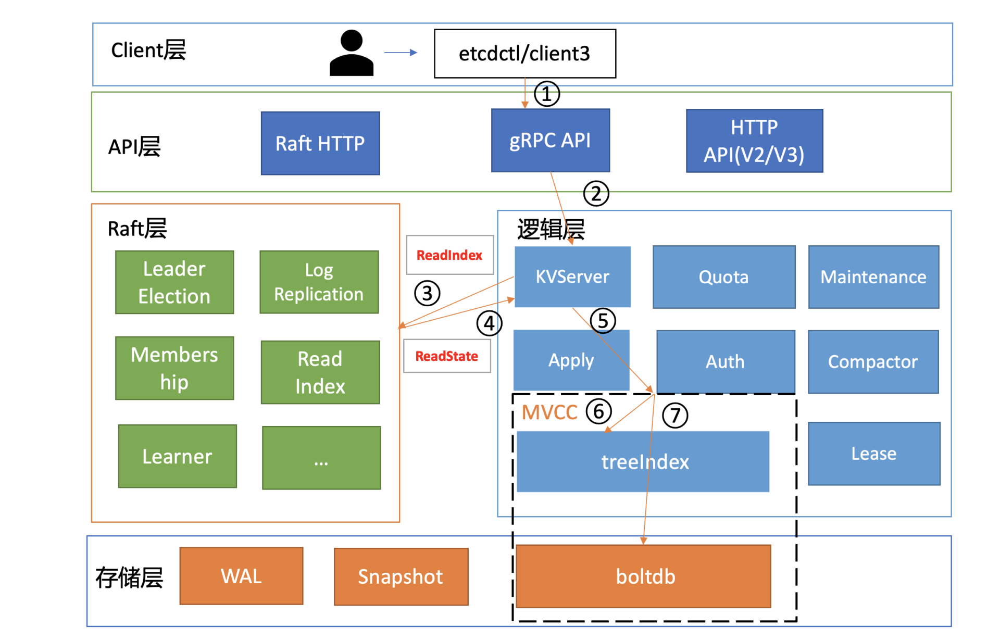
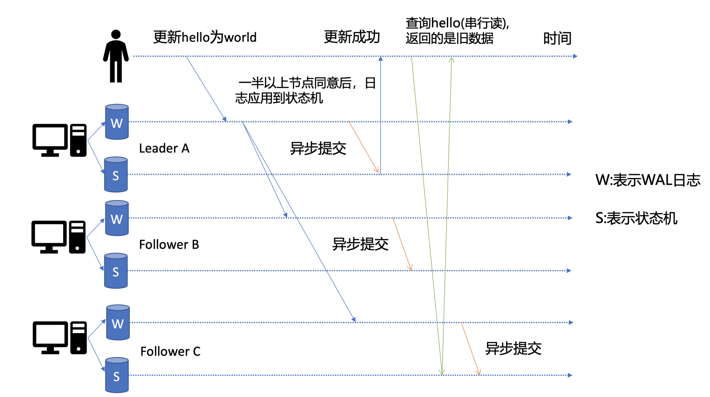
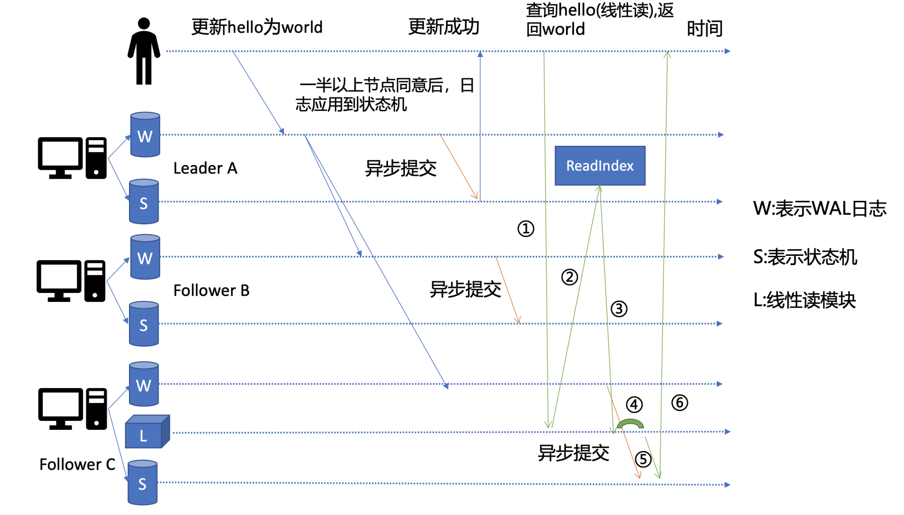
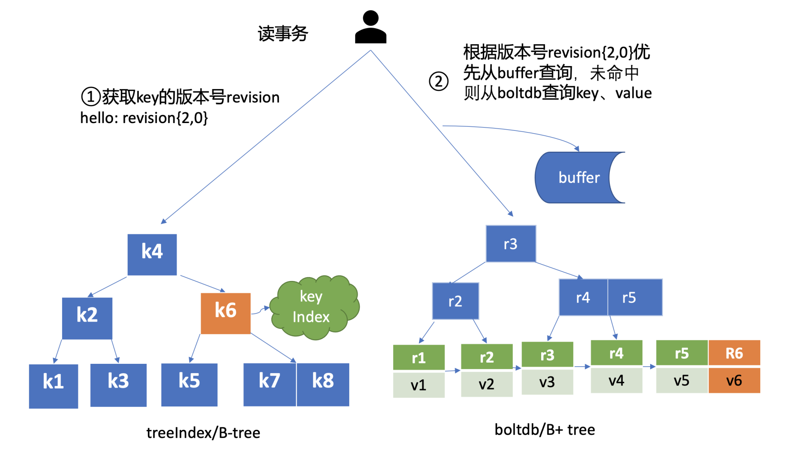

读原理
etcd是典型的读多写少存储，在我们实际业务场景中，读一般占据2/3以上的请求。
如下面这张架构图，我用序号标识了etcd默认读模式（线性读）的执行流程，接下来，我们就按照这个执行流程从头开始说。

client
启动完etcd集群后，当你用etcd的客户端工具etcdctl执行一个get foo命令（如下）时，etcdctl是如何工作的呢？
/tmp/etcd-download-test/etcdctl --endpoints=localhost:2379 get foo
首先，etcdctl会对命令中的参数进行解析。我们来看下这些参数的含义，其中，参数“get”是请求的方法，它是KVServer模块的API；“foo”是我们查询的key名；“endpoints”是我们后端的etcd地址，通常，生产环境下中需要配置多个endpoints，这样在etcd节点出现故障后，client就可以自动重连到其它正常的节点，从而保证请求的正常执行。
在etcd v3.5.17版本中， etcdctl 是通过 clientv3 库来访问 etcd server 的， clientv3 库基于 gRPC client API 封装了操作 etcd KVServer 、 Cluster 、 Auth 、 Lease 、 Watch 等模块的API。clientv3 库提供了与 etcd v3 API 交互的能力，包括但不限于数据存储、集群管理、权限控制、租约管理以及监控等功能。同时，clientv3 库也包含了负载均衡、健康探测和故障切换等特性，以确保客户端与 etcd 服务器之间的高效和稳定的通信
在解析完请求中的参数后，etcdctl 会创建一个clientv3 库对象，使用KVServer 模块的API来访问etcd server。
接下来，就需要为这个get foo请求选择一个合适的etcd server节点了，这里得用到负载均衡算法。在etcd 3.5.17中，clientv3库采用的负载均衡算法为Round-robin。针对每一个请求，Round-robin算法通过轮询的方式依次从endpoint列表中选择一个endpoint访问(长连接)，使etcd server负载尽量均衡。
为请求选择好etcd server节点，client就可调用etcd server的KVServer模块的Range RPC方法，把请求发送给etcd server。
这里说明一点，client和server之间的通信，使用的是基于HTTP/2的gRPC协议。相比etcd v2的HTTP/1.x，HTTP/2是基于二进制而不是文本、支持多路复用而不再有序且阻塞、支持数据压缩以减少包大小、支持server push等特性。因此，基于HTTP/2的gRPC协议具有低延迟、高性能的特点，有效解决了etcd v2中HTTP/1.x 性能问题。
KVServer
client发送Range RPC请求到了server后，就开始进入我们架构图中的流程二，也就是KVServer模块了。
etcd提供了丰富的metrics、日志、请求行为检查等机制，可记录所有请求的执行耗时及错误码、来源IP等，也可控制请求是否允许通过，比如etcd Learner节点只允许指定接口和参数的访问，帮助大家定位问题、提高服务可观测性等，而这些特性能够非侵入式的实现，就是依靠拦截器。
拦截器
etcd server定义了如下的Service KV和Range方法，启动的时候它会将实现KV各方法的对象注册到gRPC Server，并在其上注册对应的拦截器。下面的代码中的Range接口就是负责读取etcd key-value的的RPC接口。
service KV {
// Range gets the keys in the range from the key-value store.
rpc Range(RangeRequest) returns (RangeResponse) {
option (google.api.http) = {
post: "/v3/kv/range"
body: "*"
};
}
....
}
拦截器提供了在执行一个请求前后的hook能力，除了我们上面提到的debug日志、metrics统计、对etcd Learner节点请求接口和参数限制等能力，etcd还基于它实现了以下特性:
- 要求执行一个操作前集群必须有Leader；
- 请求延时超过指定阈值的，打印包含来源IP的慢查询日志(3.5版本)。
server收到client的Range RPC请求后，根据ServiceName和RPC Method将请求转发到对应的handler实现，handler首先会将上面描述的一系列拦截器串联成一个执行，在拦截器逻辑中，通过调用KVServer模块的Range接口获取数据。
串行读与线性读
进入KVServer模块后，我们就进入核心的读流程了，对应架构图中的流程三和四。我们知道etcd为了保证服务高可用，生产环境一般部署多个节点，那各个节点数据在任意时间点读出来都是一致的吗？什么情况下会读到旧数据呢？
这里为了帮助你更好的理解读流程，我先简单提下写流程。如下图所示，当client发起一个更新hello为world请求后，若Leader收到写请求，它会将此请求持久化到WAL日志，并广播给各个节点，若一半以上节点持久化成功，则该请求对应的日志条目被标识为已提交，etcdserver模块异步从Raft模块获取已提交的日志条目，应用到状态机(boltdb等)。

此时若client发起一个读取hello的请求，假设此请求直接从状态机中读取， 如果连接到的是C节点，若C节点磁盘I/O出现波动，可能导致它应用已提交的日志条目很慢，则会出现更新hello为world的写命令，在client读hello的时候还未被提交到状态机，因此就可能读取到旧数据，如上图查询hello流程所示。
从以上介绍我们可以看出，在多节点etcd集群中，各个节点的状态机数据一致性存在差异。而我们不同业务场景的读请求对数据是否最新的容忍度是不一样的，有的场景它可以容忍数据落后几秒甚至几分钟，有的场景要求必须读到反映集群共识的最新数据。
我们首先来看一个对数据敏感度较低的场景。
假如老板让你做一个旁路数据统计服务，希望你每分钟统计下etcd里的服务、配置信息等，这种场景其实对数据时效性要求并不高，读请求可直接从节点的状态机获取数据。即便数据落后一点，也不影响业务，毕竟这是一个定时统计的旁路服务而已。
这种直接读状态机数据返回、无需通过Raft协议与集群进行交互的模式，在etcd里叫做串行(Serializable)读，它具有低延时、高吞吐量的特点，适合对数据一致性要求不高的场景。
我们再看一个对数据敏感性高的场景。
当你发布服务，更新服务的镜像的时候，提交的时候显示更新成功，结果你一刷新页面，发现显示的镜像的还是旧的，再刷新又是新的，这就会导致混乱。再比如说一个转账场景，Alice给Bob转账成功，钱被正常扣出，一刷新页面发现钱又回来了，这也是令人不可接受的。
以上的业务场景就对数据准确性要求极高了，在etcd里面，提供了一种线性读模式来解决对数据一致性要求高的场景。
什么是线性读呢?
你可以理解一旦一个值更新成功，随后任何通过线性读的client都能及时访问到。虽然集群中有多个节点，但client通过线性读就如访问一个节点一样。etcd默认读模式是线性读，因为它需要经过Raft协议模块，反应的是集群共识，因此在延时和吞吐量上相比串行读略差一点，适用于对数据一致性要求高的场景。
如果你的etcd读请求显示指定了是串行读，就不会经过架构图流程中的流程三、四。默认是线性读，因此接下来我们看看读请求进入线性读模块，它是如何工作的。
线性读之ReadIndex
前面我们聊到串行读时提到，它之所以能读到旧数据，主要原因是Follower节点收到Leader节点同步的写请求后，应用日志条目到状态机是个异步过程，那么我们能否有一种机制在读取的时候，确保最新的数据已经应用到状态机中？

其实这个机制就是叫ReadIndex，它是在etcd 3.1中引入的，简化后的原理图如上。当收到一个线性读请求时，它首先会从Leader获取集群最新的已提交的日志索引(committed index)，如上图中的流程二所示。
Leader收到ReadIndex请求时，为防止脑裂等异常场景，会向Follower节点发送心跳确认，一半以上节点确认Leader身份后才能将已提交的索引(committed index)返回给节点C(上图中的流程三)。
C节点则会等待，直到状态机已应用索引(applied index)大于等于Leader的已提交索引时(committed Index)(上图中的流程四)，然后去通知读请求，数据已赶上Leader，你可以去状态机中访问数据了(上图中的流程五)。
以上就是线性读通过ReadIndex机制保证数据一致性原理， 当然还有其它机制也能实现线性读，如在早期etcd 3.0中读请求通过走一遍Raft协议保证一致性， 这种Raft log read机制依赖磁盘IO， 性能相比ReadIndex较差。
总体而言，KVServer模块收到线性读请求后，通过架构图中流程三向Raft模块发起ReadIndex请求，Raft模块将Leader最新的已提交日志索引封装在流程四的ReadState结构体，通过channel层层返回给线性读模块，线性读模块等待本节点状态机追赶上Leader进度，追赶完成后，就通知KVServer模块，进行架构图中流程五，与状态机中的MVCC模块进行进行交互了。
MVCC
流程五中的多版本并发控制(Multiversion concurrency control)模块是为了解决 etcd v2 不支持保存 key 的历史版本、不支持多 key 事务等问题而产生的。
它核心由内存树形索引模块(treeIndex)和嵌入式的KV持久化存储库boltdb组成。
首先我们需要简单了解下boltdb，它是个基于B+ tree实现的key-value键值库，支持事务，提供Get/Put等简易API给etcd操作。
那么etcd如何基于boltdb保存一个key的多个历史版本呢?
比如我们现在有以下方案：方案1是一个key保存多个历史版本的值；方案2每次修改操作，生成一个新的版本号(revision)，以版本号为key， value为用户key-value等信息组成的结构体。
很显然方案1会导致value较大，存在明显读写放大、并发冲突等问题，而方案2正是etcd所采用的。boltdb的key是全局递增的版本号(revision)，value是用户key、value等字段组合成的结构体，然后通过treeIndex模块来保存用户key和版本号的映射关系。
treeIndex与boltdb关系如下面的读事务流程图所示，从treeIndex中获取key hello的版本号，再以版本号作为boltdb的key，从boltdb中获取其value信息。

treeIndex
treeIndex模块是基于Google开源的内存版btree库实现的.
treeIndex模块只会保存用户的key和相关版本号信息，用户key的value数据存储在boltdb里面，相比ZooKeeper和etcd v2全内存存储，etcd v3对内存要求更低。
简单介绍了etcd如何保存key的历史版本后，架构图中流程六也就非常容易理解了， 它需要从treeIndex模块中获取hello这个key对应的版本号信息。treeIndex模块基于B-tree快速查找此key，返回此key对应的索引项keyIndex即可。索引项中包含版本号等信息。
buffer
在获取到版本号信息后，就可从boltdb模块中获取用户的key-value数据了。不过有一点你要注意，并不是所有请求都一定要从boltdb获取数据。
etcd出于数据一致性、性能等考虑，在访问boltdb前，首先会从一个内存读事务buffer中，二分查找你要访问key是否在buffer里面，若命中则直接返回。
boltdb
若buffer未命中，此时就真正需要向boltdb模块查询数据了，进入了流程七。
我们知道MySQL通过table实现不同数据逻辑隔离，那么在boltdb是如何隔离集群元数据与用户数据的呢？答案是bucket。boltdb里每个bucket类似对应MySQL一个表，用户的key数据存放的bucket名字的是key，etcd MVCC元数据存放的bucket是meta。
因boltdb使用B+ tree来组织用户的key-value数据，获取bucket key对象后，通过boltdb的游标Cursor可快速在B+ tree找到key hello对应的value数据，返回给client。
到这里，一个读请求之路执行完成。